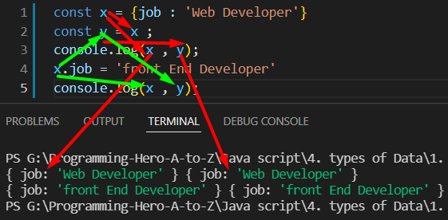
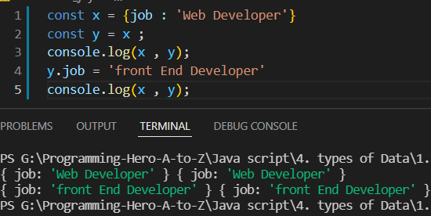
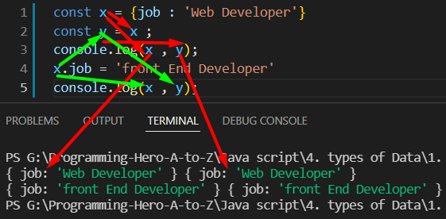
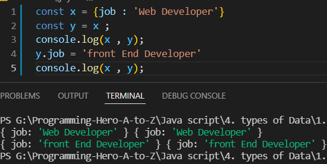

hello javascript
 এখানে 2 number লাইনে b আর a এর মান সমান ।
এখানে 2 number লাইনে b আর a এর মান সমান । কিন্তু তারপরও a এর মান যখন change করতেছি b এর নাম change হচ্ছেনা ।
ঐটা আগের মানই রয়ে যাচ্ছে ।
এখানে একটু পরে a এর মান পরিবর্তন হলেও b এর মান পরিবর্তন হয় নাই কারন
যখন কোন variable diclare করি তার মধ্যে কোন ডাটা থাকে ।
computer এ ডাটাটা স্টোর থাকে ।
আমি যখন বলছি , যে a এর মান টা b এর মধ্যেও আছে ।
কিছুখন পর a আর মানটা chnage করে ফেললাম , কিন্তু b আগের যায়গায়ই রয়ে গেছে ।
এই জন্য এটাকে(premetive type) বলে immutable , এগুলা initial value কে change করে না ।
মোট কোথা যে গুলার single , একটা মান থাকে তাই premitive data type ।
premitive এর oposite হল nonePremitve
যেমন object
 এখানে change করছি শুধু মাত্র x এর মানটাকে ,
আমি কিন্তু y কে chnage করিনাই ।
কিন্তু তাও এখানে y এর মানও change হয়ে গেছে ।
 এখানে y এর মান chnage করাতেও 2 টা variable এর মান-ই change হয়ে গেছে ।
কারন nonePremitve data তারা একটা reference ধরে রাখে ,
ঐ reference এর মধ্যে কোন একটা অংশ কে পরিবর্তন করলে ,এখানে যেহেতু দুইটাই same ,
তাই nonePremitve এর একটার মধ্যে অন্য একটা থাকে ,
যেকোনো একটা মান change করলেই 2 টা মান chnage হয়ে যায় ।
যেমন object
 এখানে change করছি শুধু মাত্র x এর মানটাকে ,
আমি কিন্তু y কে chnage করিনাই ।
কিন্তু তাও এখানে y এর মানও change হয়ে গেছে ।
 এখানে y এর মান chnage করাতেও 2 টা variable এর মান-ই change হয়ে গেছে ।
কারন nonePremitve data তারা একটা reference ধরে রাখে ,
ঐ reference এর মধ্যে কোন একটা অংশ কে পরিবর্তন করলে ,এখানে যেহেতু দুইটাই same ,
তাই nonePremitve এর একটার মধ্যে অন্য একটা থাকে ,
যেকোনো একটা মান change করলেই 2 টা মান chnage হয়ে যায় ।